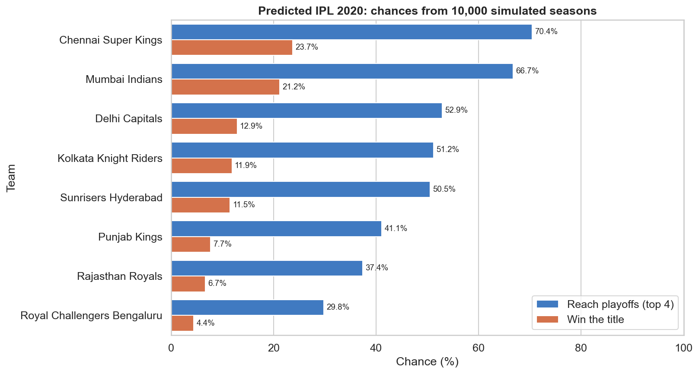
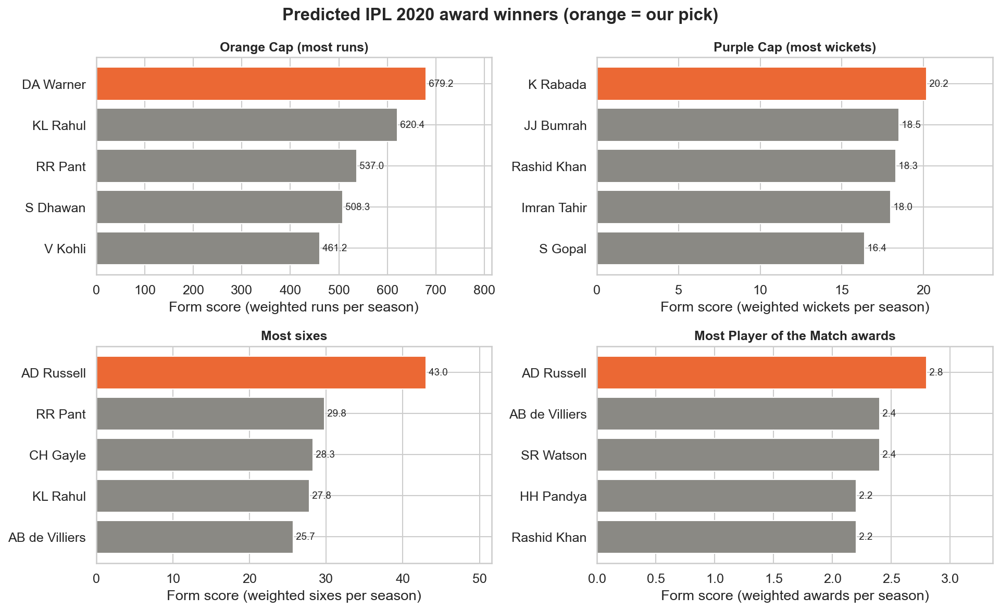

Sports Arena: IPL Performance Dashboard
Indian Premier League 2008-2019, built from ball-by-ball data with Python, pandas, matplotlib and seaborn.
Predictions for IPL 2020
Each team's strength is its win % over the last 3 seasons (weights 3, 2, 1), and the whole season was simulated 10,000 times. Award picks are the players with the best form over the same 3 seasons.


Title chances
| Team | Strength (form win %) | Reach playoffs % | Win title % |
|---|---|---|---|
| Chennai Super Kings | 62.8 | 70.4 | 23.7 |
| Mumbai Indians | 60.5 | 66.7 | 21.2 |
| Delhi Capitals | 50.3 | 52.9 | 12.9 |
| Kolkata Knight Riders | 49.6 | 51.2 | 11.9 |
| Sunrisers Hyderabad | 49.1 | 50.5 | 11.5 |
| Punjab Kings | 44.1 | 41.1 | 7.7 |
| Rajasthan Royals | 41.8 | 37.4 | 6.7 |
| Royal Challengers Bengaluru | 37.4 | 29.8 | 4.4 |
Why these teams are the favourites
A team's strength is its win % over the last 3 seasons, with the latest season counting 3 times. Mumbai Indians: (3 × 68.8 + 2 × 42.9 + 1 × 70.6) ÷ 6 = 60.5. Mumbai won the title in 2017 and 2019, but their poor 2018 season (42.9%) pulled them just below Chennai. Chennai did not play in 2017 (suspended), so only their two strong seasons count.
| Team | Win % 2017 (weight 1) | Win % 2018 (weight 2) | Win % 2019 (weight 3) | Strength |
|---|---|---|---|---|
| Chennai Super Kings | did not play | 68.8% | 58.8% | 62.8 |
| Mumbai Indians | 70.6% | 42.9% | 68.8% | 60.5 |
| Delhi Capitals | 42.9% | 35.7% | 62.5% | 50.3 |
| Kolkata Knight Riders | 56.2% | 56.2% | 42.9% | 49.6 |
| Sunrisers Hyderabad | 57.1% | 58.8% | 40.0% | 49.1 |
| Punjab Kings | 50.0% | 42.9% | 42.9% | 44.1 |
| Rajasthan Royals | did not play | 46.7% | 38.5% | 41.8 |
| Royal Challengers Bengaluru | 23.1% | 42.9% | 38.5% | 37.4 |
How did the 2020 prediction do?
The dataset ends in 2019, so the model never saw the 2020 season. Here are its predictions next to the official results (source: iplt20.com, typed in by hand only for this check). Mumbai Indians won the title: the model's #2 pick, with a 21.2% chance. The Purple Cap pick was exactly right.
| Prediction | Our pick | What really happened | Result |
|---|---|---|---|
| IPL champion | Chennai Super Kings | Mumbai Indians (beat Delhi Capitals in the final) | Our #2 pick |
| Orange Cap (most runs) | DA Warner | KL Rahul (670 runs) | Our #2 pick |
| Purple Cap (most wickets) | K Rabada | K Rabada (30 wickets) | Correct |
| Most sixes | AD Russell | Ishan Kishan (30 sixes) | Not in our top 5 (#31) |
| Playoff teams (top 4) | Chennai Super Kings, Mumbai Indians, Delhi Capitals, Kolkata Knight Riders | Mumbai Indians, Delhi Capitals, Sunrisers Hyderabad, Royal Challengers Bengaluru | 2 of 4 correct (Mumbai Indians, Delhi Capitals) |
Award predictions
| Award | Our pick | Form score | Next best |
|---|---|---|---|
| Orange Cap (most runs) | DA Warner | 679.2 runs per season | KL Rahul, RR Pant |
| Purple Cap (most wickets) | K Rabada | 20.2 wickets per season | JJ Bumrah, Rashid Khan |
| Most sixes | AD Russell | 43.0 sixes per season | RR Pant, CH Gayle |
| Most Player of the Match awards | AD Russell | 2.8 awards per season | AB de Villiers, SR Watson |
How reliable is this? (backtest 2011-2019)
For each past season we predicted using only earlier seasons, then compared with the real result. A random pick of the champion is right 1 time in 8. Treat the predictions as informed guesses, not certainties: player auctions, injuries and new talent are not in the data.
| Prediction | Seasons tested | Exactly right | Winner in our top 5 |
|---|---|---|---|
| IPL champion | 9 | 2 | 7 |
| Orange Cap (most runs) | 9 | 0 | 3 |
| Purple Cap (most wickets) | 9 | 1 | 4 |
| Most sixes | 9 | 3 | 5 |
| Most Player of the Match awards | 9 | 1 | 1 |
Explore the data (interactive)
Choose a season and a team: the numbers, chart and tables below update straight away. Click a bar in the chart to select that team or season.
Top run scorers
Top wicket takers
Match results
Player career
Key insights
- Chasing wins more: teams batting second won 55.5% of matches.
- The toss hardly matters: the toss winner won 52.3% of matches.
- Death overs (16-20) are the fastest scoring phase: 9.8 runs per over.
- Chennai Super Kings have the best all-time win rate: 61.0%.
- Best single season: V Kohli scored 973 runs in 2016.
Orange Cap and Purple Cap winners
| Season | Orange Cap | Runs | Purple Cap | Wickets | Economy |
|---|---|---|---|---|---|
| 2008 | SE Marsh | 616 | Sohail Tanvir | 22 | 6.46 |
| 2009 | ML Hayden | 572 | RP Singh | 23 | 6.99 |
| 2010 | SR Tendulkar | 618 | PP Ojha | 21 | 7.29 |
| 2011 | CH Gayle | 608 | SL Malinga | 28 | 5.95 |
| 2012 | CH Gayle | 733 | M Morkel | 25 | 7.19 |
| 2013 | MEK Hussey | 733 | DJ Bravo | 32 | 7.95 |
| 2014 | RV Uthappa | 660 | MM Sharma | 23 | 8.40 |
| 2015 | DA Warner | 562 | DJ Bravo | 26 | 8.14 |
| 2016 | V Kohli | 973 | B Kumar | 23 | 7.42 |
| 2017 | DA Warner | 641 | B Kumar | 26 | 7.05 |
| 2018 | KS Williamson | 736 | AJ Tye | 24 | 8.04 |
| 2019 | DA Warner | 692 | Imran Tahir | 26 | 6.68 |
Player form


Team comparisons


Top performers